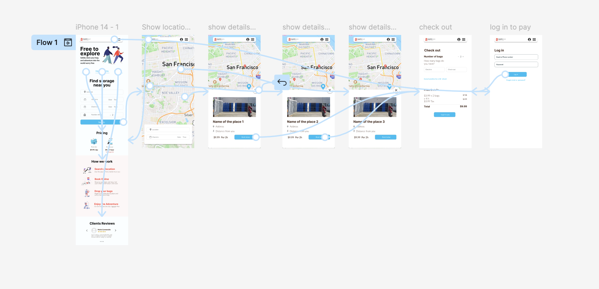

The problem
Travelers store their luggage and explore a city. Simple to describe, harder to design: the user is in an unfamiliar place, under time pressure, handing their belongings to a stranger. The service had no mobile interface at all, so every decision came back to creating confidence at the moment of highest uncertainty.
My role
Solo designer, end to end: user flows, visual direction, the full UI system, and art direction of the logo. The goal was a coherent product rather than a set of screens — confident and clear from first open to pickup confirmation.
Design decisions
The core flows — discover, book, drop off, pick up — were designed for one-handed use while distracted. I built a visual language around trust signals: clear hierarchy, strong calls to action, and spatial logic that makes the app scannable rather than something to read. Color, spacing and typography do the reliability work without tipping into sterile. Not a form to fill out, a path to follow.


Outcome
A complete end-to-end booking experience that balances user confidence against the service's operational needs, built for the context it lives in: mobile-first, low cognitive load, and fast, because travelers do not have time for anything else.